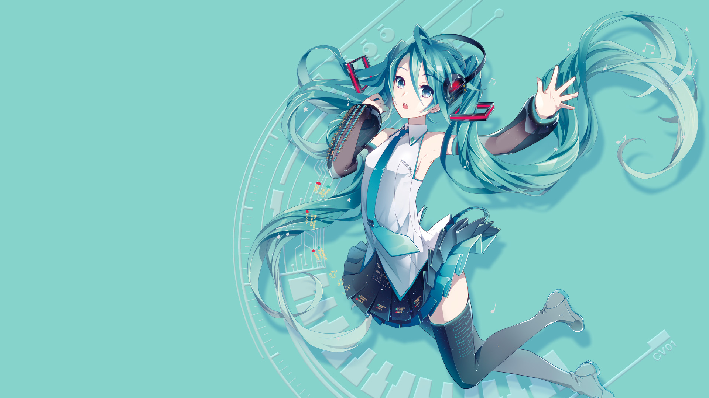
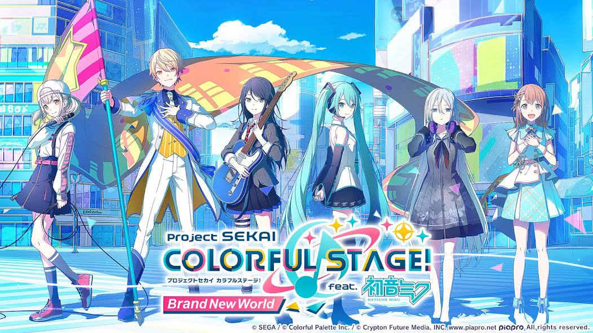
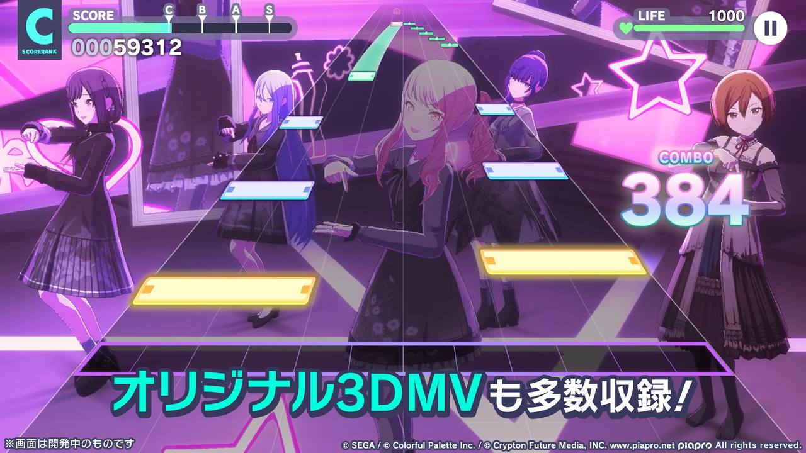
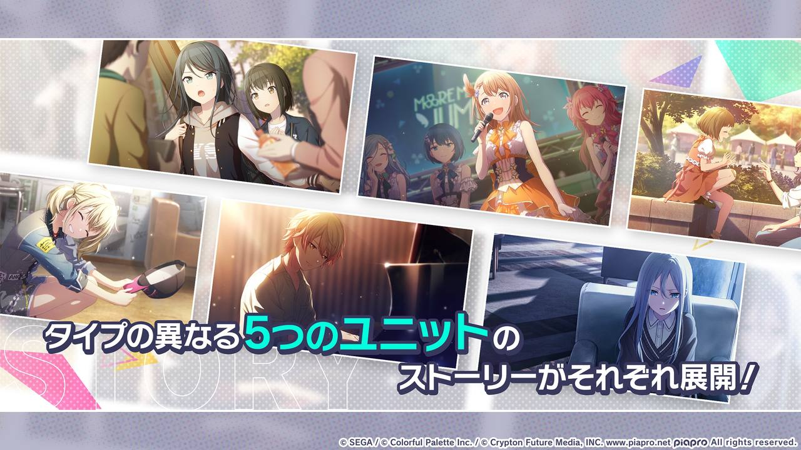
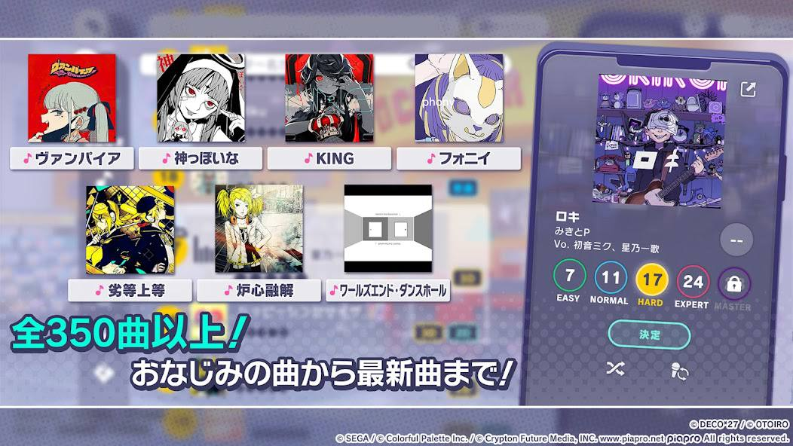

Хатсуне Мику смогла прославиться благодаря своему уникальному голосу и виртуальным концертам, используя технологию псевдообъёмной проекции. Она завоевала первые позиции в японских чартах и стала поп-идолом. Мику также активно популяризировали через различные медиаформаты, включая участие в гонках, аниме, мангу и видеоигры серии Project Diva.
В отношении коллабораций, Хатсуне Мику сотрудничала с множеством брендов и компаний. Например, была коллаборация с японской торговой сетью «Mitsukoshi Isetan», где в честь её дня рождения был запланирован специальный проект «Hatsune Miku Happy 16th Birthday -Dear Creators-»
Самым популярным проектом с участием певицы можно назвать «Секай». “Секай” в контексте Хатсуне Мику относится к игре Project SEKAI COLORFUL STAGE!, где она является одним из ключевых персонажей. В этой игре Мику и другие виртуальные певцы помогают персонажам игры понять свои истинные чувства и выразить их через музыку.
Игра Project SEKAI COLORFUL STAGE! добилась значительного успеха в индустрии игр. Она была разработана при сотрудничестве компаний SEGA, Craft Egg, Colorful Palette и Crypton Future Media и представляляет собой ритм-игру для платформ iOS и Android⁵.
Игра вышла в Японии 30 сентября 2020 года, а затем последовали релизы в Тайване, глобальная версия и версия для Кореи⁵. Игра получила положительные отзывы за свой сюжет, персонажей и музыкальный геймплей. Она также привлекла внимание благодаря виртуальным концертам и возможности общения игроков в комнате Виртуального Концерта⁵.
  